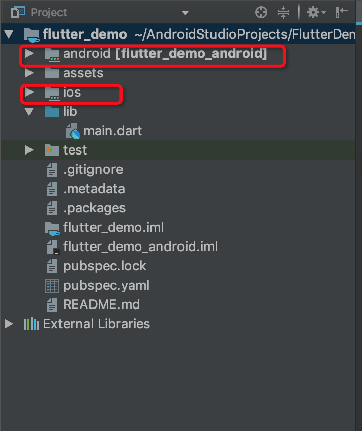
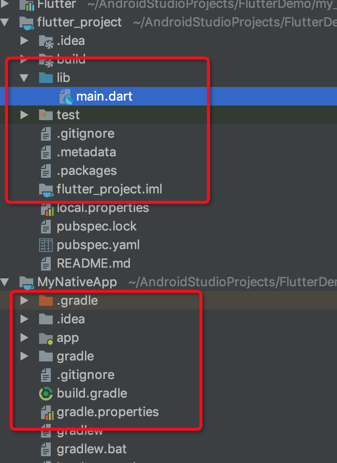

默认的使用方式 之前使用Flutter都是在AndroidStudio中直接创建Flutter应用，里面包含Android与iOS的代码，见下图：

但是在我看来这种方式有两个问题：
新的使用方法 AndroidStudio既然支持将Flutter工程作为一个Module，那必然存在一种方式，可以将一个独立的外部Flutter工程作为一个Module嵌入到一个完全独立的Android工程中。
解析Flutter相关脚本 在Android工程下有如下脚本内容（忽略部分与Flutter无关）
1 2 3 4 5 6 7 8 9 10 11 12 13 14 15 16 17 18 19 20 21 22 23 24 25 26 27 28 29 30 def localProperties = new Properties()def localPropertiesFile = rootProject.file('local.properties' )if (localPropertiesFile.exists()) { localPropertiesFile.withReader('UTF-8' ) { reader -> localProperties.load(reader) } } def flutterRoot = localProperties.getProperty('flutter.sdk' )if (flutterRoot == null ) { throw new GradleException("Flutter SDK not found. Define location with flutter.sdk in the local.properties file." ) } apply plugin: 'com.android.application' apply from: "$flutterRoot/packages/flutter_tools/gradle/flutter.gradle" android { ··· } flutter { source '../..' } dependencies { ··· }
1 2 3 4 5 6 7 8 9 10 11 12 13 14 15 include ':app' def flutterProjectRoot = rootProject.projectDir.parentFile.toPath()def plugins = new Properties()def pluginsFile = new File(flutterProjectRoot.toFile(), '.flutter-plugins' )if (pluginsFile.exists()) { pluginsFile.withReader('UTF-8' ) { reader -> plugins.load(reader) } } plugins.each { name, path -> def pluginDirectory = flutterProjectRoot.resolve(path).resolve('android' ).toFile() include ":$name" project(":$name" ).projectDir = pluginDirectory }
从上面可以看出，如果将一个Flutter工程作为插件的方式加入到Native工程中是完全可行的。
增加Flutter中间件 Google为我们提供了一个Flutter Module作为中间件，创建方式如下：
1 flutter create -t module my_flutter
执行成功后会出现一个新的Module，这个module就是用来连接Native工程与Flutter工程，因此需要对此模块进行修改：
1 2 3 flutter { source '../../../flutter_project' }
导入Module 增加脚本include_flutter.groovy，内容如下：
1 2 3 4 5 6 7 8 9 10 11 12 13 14 15 16 17 18 19 20 21 22 23 24 25 26 27 28 29 30 31 32 33 def scriptFile = getClass().protectionDomain.codeSource.location.pathdef flutterProjectRoot = new File(scriptFile).parentFile.parentFilegradle.include ':flutter' gradle.project(':flutter' ).projectDir = new File(flutterProjectRoot, '.android/Flutter' ) def plugins = new Properties()def pluginsFile = new File(flutterProjectRoot, '.flutter-plugins' )if (pluginsFile.exists()) { pluginsFile.withReader('UTF-8' ) { reader -> plugins.load(reader) } } plugins.each { name, path -> println(path) def pluginDirectory = new File(path) } gradle.include ":flutter_project" gradle.project(":flutter_project" ).projectDir = new File('/Users/sunwenwu/AndroidStudioProjects/FlutterDemo/flutter_project' ) gradle.getGradle().projectsLoaded { g -> g.rootProject.afterEvaluate { p -> p.subprojects { sp -> if (sp.name != 'flutter' ) { sp.evaluationDependsOn(':flutter' ) } } } }
在Native工程的settings.gradle中设置该导入脚本即可
1 2 3 4 5 setBinding(new Binding([gradle: this ])) evaluate(new File( settingsDir, 'include_flutter.groovy' ))
使用结果 经过如上配置后，就可以在一个工程中同时存在Flutter工程以及Native工程，也可以同时进行编译。

使用时可以直接运行Native工程，立刻安装运行应用
如果要使用flutter热加载功能，需要在flutter目录下运行flutter attach命令，需要热加载时，按下”r”键即可。
需要注意，这种方式不是Google提供的，而是在Google提供的脚本基础上进行修改，后续修改方法可能会随时变动。
参考 https://github.com/flutter/flutter/wiki/Add-Flutter-to-existing-apps